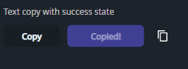

DaisyCopyButton is a DaisyButton that copies text to the clipboard on click and briefly switches to a success state. It's ideal for “copy invite link”, “copy token”, and similar flows where immediate feedback matters.
| Property | Description |
|---|---|
CopyText (string?) |
Text copied to the clipboard when clicked. When null, copies an empty string. |
SuccessDuration (TimeSpan) |
How long the success state is shown (default 2s). |
SuccessContent (object?) |
Content shown during the success state (default Copied). |
Because it inherits from DaisyButton, all button properties (e.g. Variant, ButtonStyle, Size, Shape, shadows) can be used.
<!-- Simple copy button -->
<controls:DaisyCopyButton CopyText="https://example.com/invite" />
<!-- Styled + custom success content -->
<controls:DaisyCopyButton Variant="Primary"
ButtonStyle="Soft"
Content="Copy link"
CopyText="{Binding InviteUrl}"
SuccessContent="Copied!" />
<!-- Icon-only -->
<controls:DaisyCopyButton Shape="Square" Size="Small" CopyText="{Binding Token}">
<PathIcon Data="{StaticResource DaisyIconCopy}" Width="16" Height="16" />
</controls:DaisyCopyButton>SuccessContent short so the button doesn't resize noticeably.